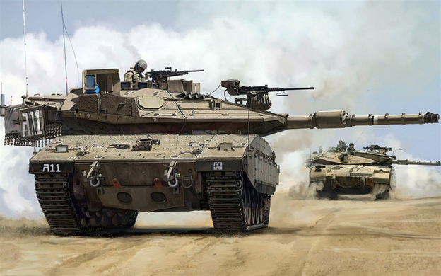

Content
- Shyrion Is the Heavy well Armored maneuver force in the IDF.
- This special infantry will allways be useful to face to face infantries and even sometimes for air infantries.
- Shyrion is a unique infantry in the IDF and theres no one simillar to it.
- The Shyrion infantry specialize in every landmark of Israel, and any of its borders.
- Shyrion color is green and black.
- Shyrion has eleven different brigades!
- Shyrion has participated in every one of israel wars !
- Shyrion Primary Tank is The "Merkava 4"
